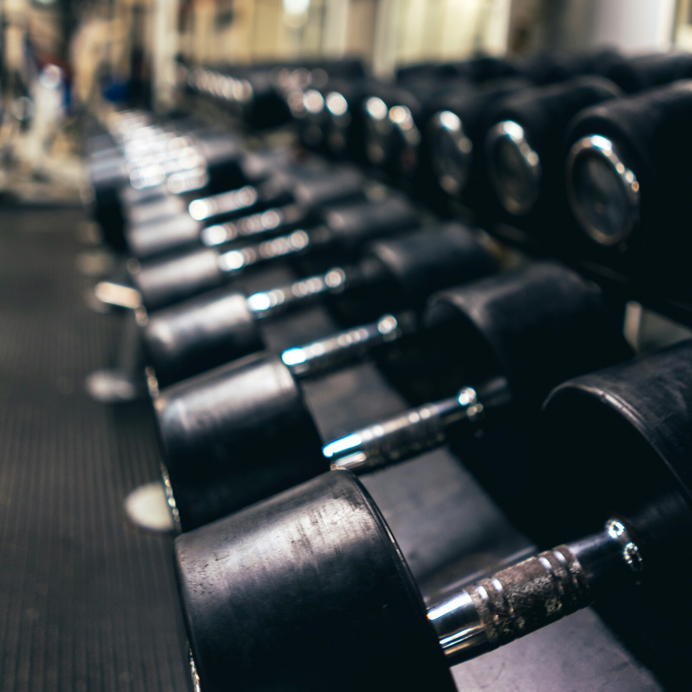
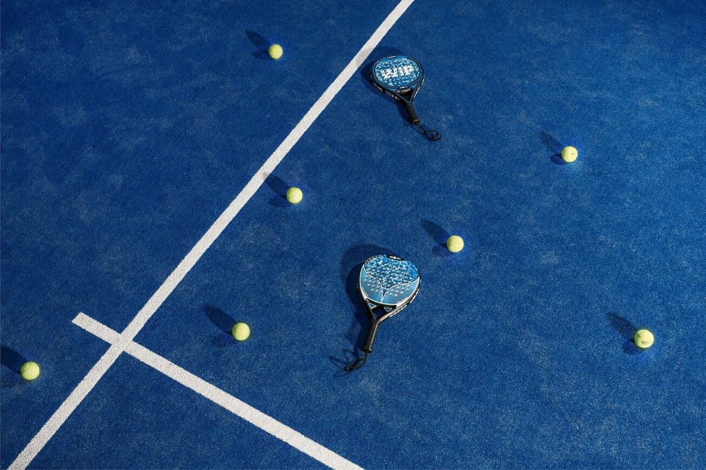
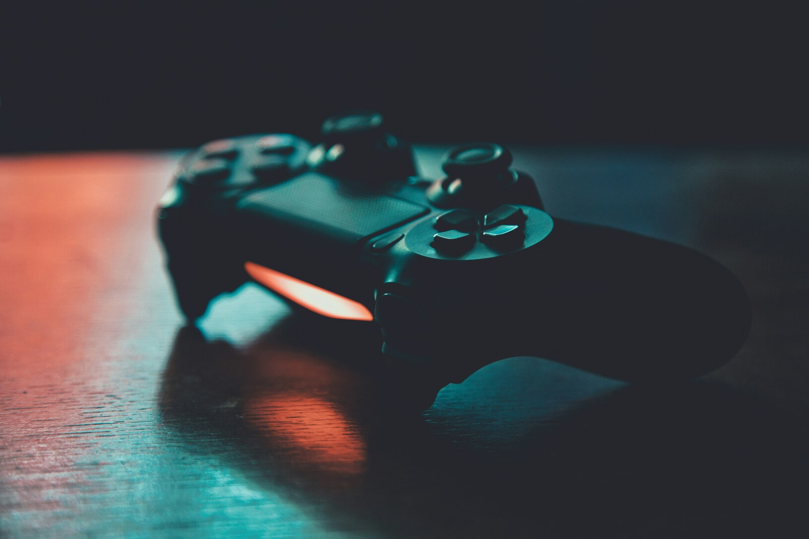
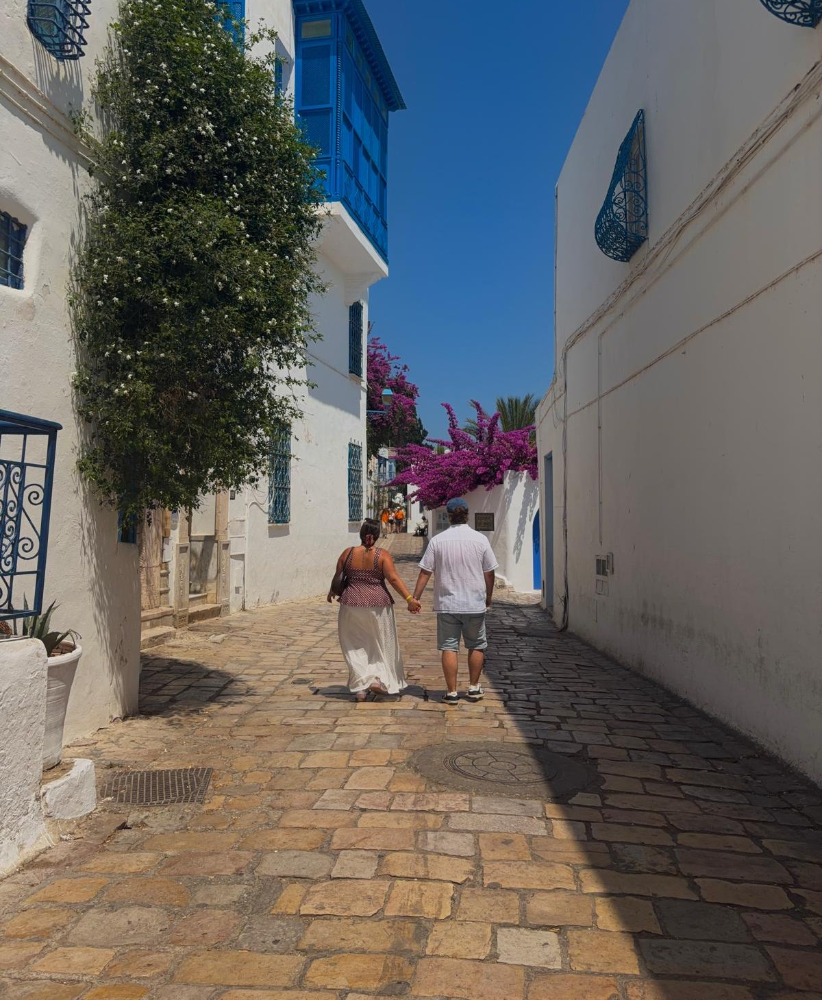
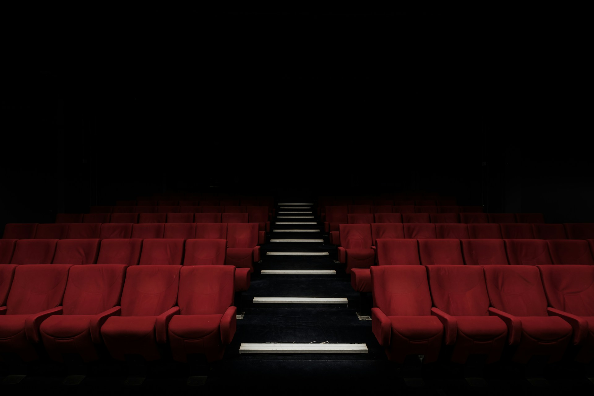
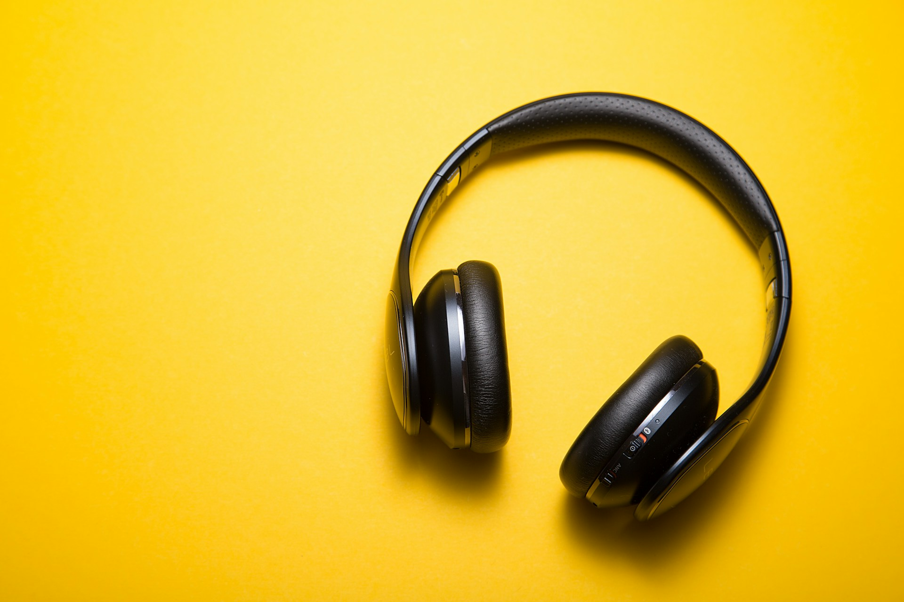

Fitness
Fitness is een van mijn belangrijkste hobby's. Ik ga vier tot vijf keer per week fitnessen bij Basic-Fit in Diest, meestal samen met mijn papa.
Ik vind het fijn om actief bezig te zijn en tegelijkertijd aan mijn persoonlijke doelen te werken. Tijdens het fitnessen train ik verschillende
spiergroepen en probeer ik mijn oefeningen zo correct mogelijk uit te voeren. Ik vind het belangrijk om mijn trainingen regelmatig te volgen en
mijn vooruitgang op lange termijn te verbeteren. Naast het fysieke aspect heeft fitness mij ook verschillende persoonlijke vaardigheden
bijgebracht. Zo heb ik geleerd om gedisciplineerd te werken, consistent te blijven en mijn trainingen goed te plannen. Soms verloopt een
training minder vlot of is een oefening moeilijker dan verwacht. Op zulke momenten probeer ik gemotiveerd te blijven en niet meteen op te geven.
Daarnaast vind ik het leuk om samen met mijn papa te trainen, omdat we elkaar kunnen motiveren en ondersteunen. Voor mij is fitness dus niet
alleen een manier om actief te blijven, maar ook een hobby waarin ik mezelf voortdurend kan ontwikkelen.

Padel
Padel is een sport die ik regelmatig beoefen, meestal samen met mijn papa, mama en zus op het padelterrein van Nike. Ik vind het leuk om samen
met mijn familie actief bezig te zijn en tegelijkertijd een sportieve en gezellige activiteit te doen. Tijdens het spelen probeer ik mijn
techniek te verbeteren, de bal goed te plaatsen en tactisch na te denken over de volgende slag. Padel vraagt niet alleen fysieke inspanning,
maar ook concentratie en inzicht in het spel.
Naast het sportieve aspect vind ik vooral het sociale contact belangrijk. We kunnen elkaar aanmoedigen, samen plezier maken en elkaar uitdagen
om beter te spelen. Omdat padel meestal in teams van twee wordt gespeeld, heb ik ook geleerd hoe belangrijk communicatie en samenwerking zijn.
Je moet goed op elkaar inspelen en snel reageren op veranderende situaties tijdens een wedstrijd. Daarnaast helpt padel mij om mijn
aandacht bij het spel te houden en rustig te blijven wanneer een punt minder goed verloopt. Voor mij is padel dus een leuke manier om te
bewegen, tijd door te brengen met mijn familie en mezelf op verschillende vlakken te ontwikkelen.

Gaming
In mijn vrije tijd besteed ik graag tijd aan gamen. Gaming is al jarenlang een van mijn grootste hobby's en ik vind het leuk om
verschillende games te ontdekken en te spelen. Ik speel voornamelijk first-person shooters (FPS) en sportgames. Bij FPS-games draait het
onder andere om reactiesnelheid, nauwkeurigheid en tactisch inzicht. Sportgames spreken mij dan weer aan omdat ze strategie en competitie
combineren met sporten die ik ook in het echte leven interessant vind.
Wat ik vooral leuk vind aan gamen, is dat ik mezelf voortdurend kan uitdagen en mijn vaardigheden kan verbeteren. Ik probeer nieuwe
strategieën uit, leer uit mijn fouten en pas mijn aanpak aan wanneer iets niet goed verloopt. Daarnaast speel ik regelmatig online, waardoor
ik ook contact heb met andere spelers. Bij teamgerichte games is het belangrijk om goed samen te werken en duidelijk te communiceren om een
gezamenlijk doel te bereiken. Gaming is voor mij dus niet alleen een manier om te ontspannen na een drukke dag, maar ook een hobby waarbij
strategie, concentratie en samenwerking een belangrijke rol spelen.

Samen tijd doorbrengen
Naast mijn andere hobby's vind ik het fijn om tijd door te brengen met mijn Vriendin. We doen graag samen leuke activiteiten,
kijken films en gaan er af en toe op uit. Het is voor mij een aangename manier om te ontspannen en even afstand te nemen van mijn
dagelijkse bezigheden. Ik vind het belangrijk om ook buiten mijn studies tijd te maken voor de mensen die dicht bij mij staan.

Films & series kijken
In mijn vrije tijd kijk ik graag naar films en series. Ik vind het vooral interessant om films te bekijken met een goed verhaal,
onverwachte wendingen en mysterieuze elementen. Ik hou ervan om mee te denken over wat er gaat gebeuren en om achteraf na te denken
over het verhaal. Daarnaast vind ik het leuk om samen met anderen een film of serie te bekijken. Het is voor mij een leuke manier
om te ontspannen en even te ontsnappen aan de dagelijkse bezigheden.

Muziek luisteren
In mijn vrije tijd luister ik graag naar muziek. Ik vind het leuk om verschillende muziekgenres en artiesten te ontdekken.
Muziek speelt voor mij een belangrijke rol in het dagelijkse leven en past bij verschillende momenten. Soms luister ik naar
muziek om te ontspannen, terwijl ik op andere momenten liever naar iets energieker luister. Het helpt me om mijn gedachten
even te verzetten en zorgt voor een aangename afwisseling tijdens mijn dagelijkse bezigheden.